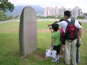
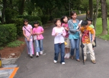
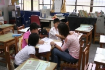
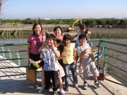
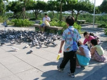

|
秋萍老師：
當初，會答應主任，帶著我班上的孩子，參加「網界博覽會鄉土網頁設計比賽」活動，只是希望孩子能多元學習，而且這個機會是可遇不可求的。
這班四年級的學生，非常活潑、很有自己的想法。我們的工作分組，是採取認養方式，當擺不平時，就以猜拳勝負定結果。用他們可以接受的方式來決定事情，所以工作的推行還算順利。每一組在工作之前，，我們都會詳細說明，並教導他們做事前的預備工作。
我們是竹圍國小的分校，全班22位小朋友，有家庭功能不彰、父母不管、學業低落，交不出報告的，也有時間被排滿滿沒空寫報告的，有怎麼催就是不寫的。我們不在意孩子做得好不好，而是希望他們能去嘗試，唉！催交、叮嚀的工作好烦瑣、辛苦。
如今「網界博覽會鄉土網頁設計比賽」活動已近尾聲，回首想想----孩子們認真的討論、努力的做筆記，下課、午休時，主動請求到電腦教室，查資料、打報告，整理出來的字字句句童言童語，讓我們看了既欣慰又感動。也赫然發現他們長大了、功力也增強了。
其實大部分的孩子，是能了解我們的苦心、體會我們的付出。
我認為活動得以圓滿完成，除了孩子的努力，要感激建興主任、育真老師辛勤的帶領，感恩家長的支持與配合。
孩子們！輕鬆一下！我以你們為榮！
|
|
育真老師：
自強分校只不過有一兩排校舍、一個小球場，但卻有一群讓人又愛又恨的小朋友。這次，我能夠跟著學校老師帶著他們一起參加
網界博覽會鄉土網頁設計比賽的活動，真的是個難得的機會
，讓我在實習的階段學到很多！
在活動的過程中，我們一直抱持著一個想法，就是讓孩子們「從做中學」。所以我們請小朋友務必做好事前的準備工作，實地的投入，不管是人物採訪，上圖書館，到街上做問卷調查，或是網頁製作，我們希望孩子可以有一個比較完整的學習經驗，能夠從實做中累積自己的能力。學校老師們也都盡量提供各種人力、物力資源，讓他們學習。雖然四年級的小朋友還無法用很通順的字句表達自己的想法，報告也是錯字滿滿，但是每一段文字都流露出一種屬於他們的真實感受。他們不斷地在進步，從茫然的眼神，天真的好奇，緊張的準備，完全的投入，到能夠從容自信的向別人談論媽祖石的種種，這一路下來，我見證了孩子們的成長，他們真的很棒。這就是參加比賽最大的回饋。
這次的活動除了小朋友的努力，老師們的辛苦，我要感激許多協助我們的人，包括學生家長們，社區耆老，各專長領域的教授，還有提供我們媽祖石資料的人。謝謝這些人不計酬勞的付出，讓我們的學生獲得新知，才能促成今日的結果。而這次的活動也是一連串的巧合，巧到讓我們驚訝，可說是幸運，也可說是感謝媽祖石的保佑。謝謝大家！我會珍惜這樣一段難忘的回憶！
|
| |
|
建興老師：
帶領一群十歲的小朋友，從事鄉土研究工作真是一件非常辛苦的事，小朋友資料查詢、資料收集、專家訪問、問卷調查、最困難的是網頁製作。每一樣都是從零開始學習，指導的老師真是很累。
自強分校的學生每天在小小的校園中學習與生活，在這小小的天地裡，小朋友可以快樂的學習與遊戲，但是在這小小的天地中，是無法培養出有宏觀與廣大氣度的學生，所以在忙也要帶領著學生，透過網路的學習與競賽活動，增加學生各方面的能力，讓學生利用網路看看外面的世界是如此的寬廣。
|
|
|
|
| 是誰放屁趕快說！ |
|
|
| 老師指南針是我的，很有用處吧！ |
|
 |
| 每個人碑文唸十遍，才可以回家 |
|
 |
| 再不乖就留下來，不要回學校 |
|
 |
| 要記得
啊！訪問的時候要有禮貌 |
|
 |
| 出來訪問是最快樂的事 |
|
 |
| 小鳥來吃東西，大哥！這不是小鳥是鴿
子 |
|
|